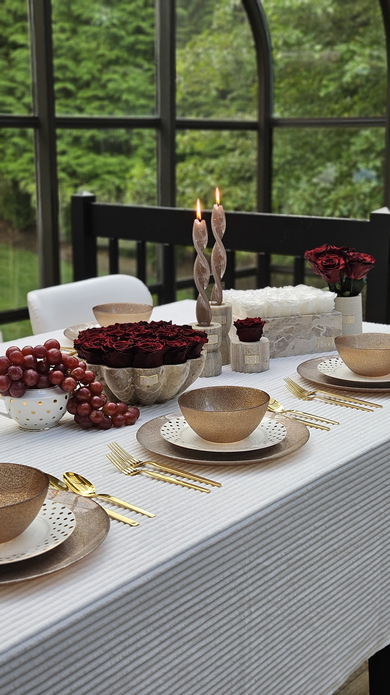

<!-- @dsCard group="Storefront" viewport="1440x900" name="About — Sequin" subtitle="About page: story, studio, values" -->
<!DOCTYPE html>
<html lang="en">
<head>
<meta charset="utf-8" />
<meta name="viewport" content="width=device-width, initial-scale=1" />
<title>About — Sequin Table Linen</title>
<link rel="stylesheet" href="../../styles.css" />
<style>
  body { margin: 0; background: #F7F2EA; }
  .sq-rv { opacity:0; transform:translateY(10px); transition:opacity 600ms cubic-bezier(.4,0,.2,1),transform 600ms cubic-bezier(.4,0,.2,1); }
  .sq-rv.sq-show { opacity:1; transform:translateY(0); }
  @media (prefers-reduced-motion:reduce){ .sq-rv{opacity:1;transform:none;transition:none;} }
  :focus-visible { outline: 1.5px solid #BE9A6E; outline-offset: 3px; }
</style>
</head>
<body>
<div id="root"></div>

<script src="https://unpkg.com/react@18.3.1/umd/react.development.js" integrity="sha384-hD6/rw4ppMLGNu3tX5cjIb+uRZ7UkRJ6BPkLpg4hAu/6onKUg4lLsHAs9EBPT82L" crossorigin="anonymous"></script>
<script src="https://unpkg.com/react-dom@18.3.1/umd/react-dom.development.js" integrity="sha384-u6aeetuaXnQ38mYT8rp6sbXaQe3NL9t+IBXmnYxwkUI2Hw4bsp2Wvmx4yRQF1uAm" crossorigin="anonymous"></script>
<script src="https://unpkg.com/@babel/standalone@7.29.0/babel.min.js" integrity="sha384-m08KidiNqLdpJqLq95G/LEi8Qvjl/xUYll3QILypMoQ65QorJ9Lvtp2RXYGBFj1y" crossorigin="anonymous"></script>
<script src="https://unpkg.com/lucide@latest"></script>
<script src="../../_ds_bundle.js"></script>
<script type="text/babel" src="tweaks-panel.jsx"></script>
<script type="text/babel" src="Header.jsx"></script>
<script type="text/babel" src="Footer.jsx"></script>

<script type="text/babel">
  const { useState, useEffect, useRef } = React;

  /* ── Reveal hook ── */
  function useReveal(ref) {
    useEffect(() => {
      if (!ref.current) return;
      const obs = new IntersectionObserver(entries => {
        entries.forEach(e => {
          if (!e.isIntersecting) return;
          [...e.target.querySelectorAll(".sq-rv")].forEach((el,i) => {
            el.style.transitionDelay = i * 90 + "ms";
            el.classList.add("sq-show");
          });
        });
      }, { threshold: 0.1 });
      obs.observe(ref.current);
      return () => obs.disconnect();
    }, []);
  }

  /* ── About Masthead ── */
  function AboutMasthead() {
    const ref = useRef(null);
    useReveal(ref);
    return (
      <section ref={ref} style={{ background:"#F7F2EA", padding:"96px 44px 72px" }}>
        <div style={{ maxWidth:1240, margin:"0 auto" }}>
          <span className="sq-rv" style={aS.eyebrow}>( Our Story )</span>
          <h1 className="sq-rv" style={aS.mastH}>
            A linen house built on<br />the <em style={{fontStyle:"italic"}}>art of the table</em>.
          </h1>
        </div>
      </section>
    );
  }

  /* ── Story Section ── */
  function StorySection() {
    const ref = useRef(null);
    useReveal(ref);
    return (
      <section ref={ref} style={{ background:"#F7F2EA", padding:"0 44px 104px" }}>
        <div style={{ maxWidth:1240, margin:"0 auto", display:"grid", gridTemplateColumns:"1fr 1fr", gap:80, alignItems:"start" }}>
          <div style={{ display:"flex", flexDirection:"column", gap:28 }}>
            <h2 className="sq-rv" style={aS.h2}>
              Brooklyn, hand-finished,<br />made for <em style={{fontStyle:"italic"}}>real moments</em>.
            </h2>
            <p className="sq-rv" style={aS.body}>
              Sequin began as a single idea: that table linen should feel as considered as everything else at an occasion worth celebrating. We started with a small studio in Brooklyn and a conviction that quality and care show at the table — in the weight of a cloth, the precision of a hem, the way a colour holds the light at dinner.
            </p>
            <p className="sq-rv" style={aS.body}>
              Every piece in the Sequin collection is sourced for its texture and finish, then hand-pressed and quality-checked in-house before it leaves our studio. Whether you are renting for your wedding or buying a runner for Sunday dinners, the same attention goes into every fold.
            </p>
            <p className="sq-rv" style={aS.body}>
              We believe the table is the stage for every gathering worth remembering — and we believe it should look the part.
            </p>
            <a className="sq-rv" href="process.html" style={aS.link}>See how we work →</a>
          </div>
          <div className="sq-rv" style={{ display:"flex", flexDirection:"column", gap:24 }}>
            <div style={{ borderRadius:"20px 0 20px 0", overflow:"hidden", aspectRatio:"4/5" }}>
              
            </div>
            <div style={{ display:"grid", gridTemplateColumns:"1fr 1fr", gap:16 }}>
              {[
                { label:"Collections", value:"97+" },
                { label:"Years in Brooklyn", value:"8" },
                { label:"Events styled", value:"1,200+" },
                { label:"Same-week delivery", value:"Always" },
              ].map(s => (
                <div key={s.label} style={{ background:"#FBF6EF", borderRadius:"12px 0 12px 0", padding:"22px 24px", border:"1px solid #E4DDD0" }}>
                  <div style={{ fontFamily:"'Audrey','Playfair Display','Cormorant Garamond',Georgia,serif", fontWeight:500, fontSize:28, color:"#221A12", lineHeight:1 }}>{s.value}</div>
                  <div style={{ fontFamily:"var(--font-ui)", fontSize:11, fontWeight:500, letterSpacing:"0.22em", textTransform:"uppercase", color:"#BE9A6E", marginTop:8 }}>{s.label}</div>
                </div>
              ))}
            </div>
          </div>
        </div>
      </section>
    );
  }

  /* ── Values Section ── */
  function Values() {
    const ref = useRef(null);
    useReveal(ref);
    const vals = [
      { title:"Intention over quantity.", body:"We'd rather offer 97 considered pieces than thousands of options. Every cloth earns its place." },
      { title:"Hand-finished, always.", body:"No conveyor belts. Every item is pressed, inspected and wrapped by hand in our Brooklyn studio." },
      { title:"Two ways, one standard.", body:"Rental or retail — the same cloth, the same care, the same result on your table." },
    ];
    return (
      <section ref={ref} style={{ background:"#221A12", padding:"104px 44px" }} data-theme="noir">
        <div style={{ maxWidth:1240, margin:"0 auto" }}>
          <span className="sq-rv" style={{ ...aS.eyebrow, color:"#BE9A6E", display:"block", marginBottom:52 }}>( What We Believe )</span>
          <div style={{ display:"grid", gridTemplateColumns:"repeat(3,1fr)", gap:48 }}>
            {vals.map((v,i) => (
              <div key={i} className="sq-rv" style={{ display:"flex", flexDirection:"column", gap:16 }}>
                <div style={{ width:"100%", height:1, background:"rgba(190,154,110,.3)" }} />
                <h3 style={{ fontFamily:"'Audrey','Playfair Display','Cormorant Garamond',Georgia,serif", fontWeight:500, fontStyle:"italic", fontSize:22, color:"#FBF6EF", margin:0 }}>{v.title}</h3>
                <p style={{ fontFamily:"var(--font-ui)", fontSize:14, lineHeight:1.72, color:"#9A8A75", margin:0 }}>{v.body}</p>
              </div>
            ))}
          </div>
        </div>
      </section>
    );
  }

  const aS = {
    eyebrow: { fontFamily:"var(--font-ui)", fontSize:10, fontWeight:500, letterSpacing:"0.4em", textTransform:"uppercase", color:"#BE9A6E", display:"block", marginBottom:24 },
    mastH:   { fontFamily:"'Audrey','Playfair Display','Cormorant Garamond',Georgia,serif", fontWeight:500, fontSize:"clamp(38px,5vw,68px)", lineHeight:1.08, letterSpacing:"-0.01em", color:"#221A12", margin:0 },
    h2:      { fontFamily:"'Audrey','Playfair Display','Cormorant Garamond',Georgia,serif", fontWeight:500, fontSize:"clamp(28px,3vw,38px)", lineHeight:1.15, color:"#221A12", margin:0 },
    body:    { fontFamily:"var(--font-ui)", fontSize:15, lineHeight:1.78, color:"#6B4F3A", margin:0, maxWidth:"54ch" },
    link:    { display:"inline-block", fontFamily:"var(--font-ui)", fontSize:12, fontWeight:500, letterSpacing:"0.18em", textTransform:"uppercase", color:"#221A12", textDecoration:"none", borderBottom:"1px solid #BE9A6E", paddingBottom:3 },
  };

  function App() {
    useEffect(() => { window.lucide && window.lucide.createIcons(); });
    const go = (id, href) => { window.location.href = href; };
    return (
      <React.Fragment>
        <SequinHeader active="about" onNav={go} />
        <AboutMasthead />
        <StorySection />
        <Values />
        <SequinFooter />
      </React.Fragment>
    );
  }

  ReactDOM.createRoot(document.getElementById("root")).render(<App />);
</script>
</body>
</html>
